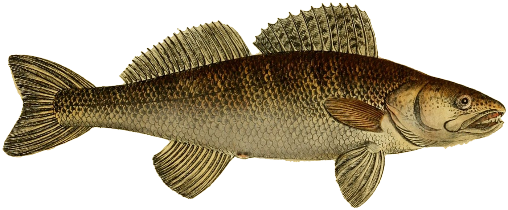
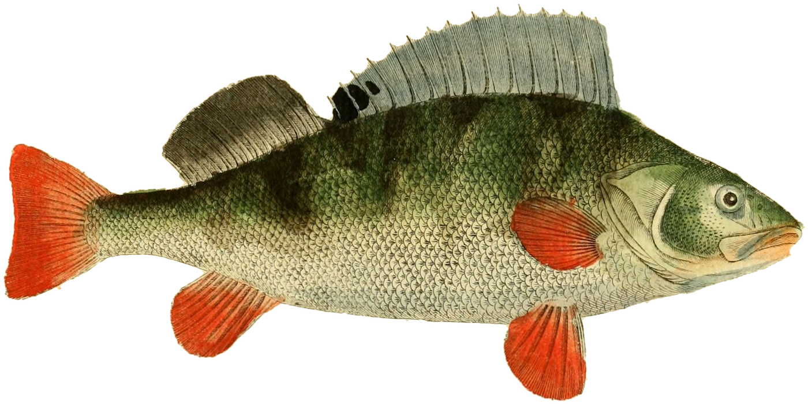

17:43
C'est quel poisson ?
Propositions de l'iPhone, sans réseau. Tu confirmes.
Brochet
Esox lucius

Sandre
Sander lucioperca

Perche
Perca fluviatilis
Aucune de ces espèces
Pas un poisson
Taille, à peu près
68
cm
10 cm
120 cm
Voir ce que je peux faire